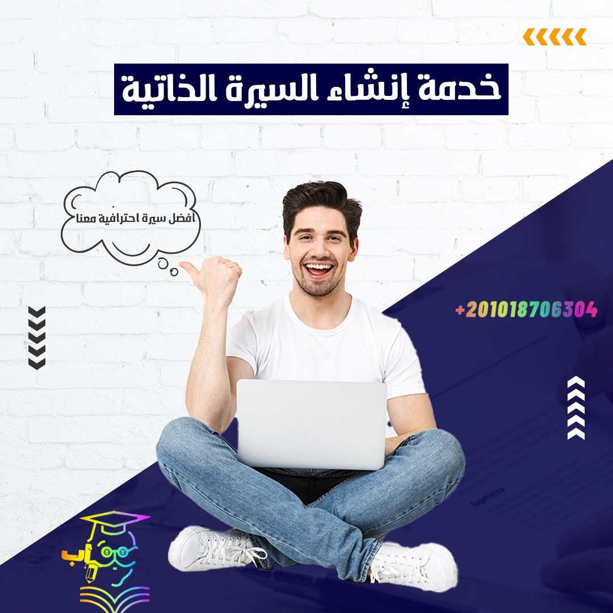

تحرص شركة شباب المستقبل للاستشارات الأكاديمية على تقديم أقصي فائدة للباحثين في الوطن العربي؛ لذلك قامت بتجهيز دورة احترافية لتطبيق أسس الإحصاء في البحث العلمي بهدف تمكين المشاركين في الدورة من تطبيق أهم المبادئ والأساسيات الإحصائية المُتعارف عليها والتطبيق العملي في الأبحاث العلمية.
استفسار طلب الخدمةخدمات آخرى
إنشاء السيرة الذاتية

هل ترغب في زيادة فرص قبولك لوظيفة أحلامك! نحن هنا لنساعدك بأفضل الخدمات الاحترافية في خدمة إنشاء السيرة الذاتية، لأن السيرة الذاتية هي وجُهتك الأولي أمَام أصحاب العمل؛ حيث أنهم يتَلقون مئات من السيرِ الذاتية يوميًا! تحتاج إلى أن تكُون سيرتك الذاتية مُتميزةِ ومُتقنةِ ومنسقة لتجذب الانتباه في سوق العمل التنافسي منذ أول 30 ثانية ! لا تفوت خدمتنا الإحترافية.
ولا داعى لقلق ! أنت في المكان المُناسب نُساعدك في أن تخطو الخطوة الأولي نحو وظيفة أحلامك ونجعل الأمر أكثر سهولة ويُسر بالحصول على تصميم سيرة ذاتية احترافي ومُبدع، يُمكنك من زيادة فرص قبولك في المقابلة والفوز بالوظيفة، والتعريف بنفسك بطريقة مهنية وتسويق مهاراتك وخبراتك، والتأكد من أن كل التفاصيل مصقولة بشكل مثالي، وتُظهر أنك الشخص الأكثر جدارة للحصول على وظيفة الأحلام، وذلك عبر مجموعة من قوالب التصميم الاحترافية وتقديم المشورة والنصائح التي تجعل سيرتك الذاتية أكثر احترافية.
ضمانات شراء خدمة إنشاء السيرة الذاتية من شباب المستقبل
-خدمة استشارة مجانية لتقييم سيرتك الذاتية من قبل خبير لضمان حصولك على سيرة ذاتية احترافية.
-كتابة سيرة ذاتية باستخدام كلمات مفتاحيه من قائمة وظائف صاحب العمل.
-كتابة سيرة ذاتية باللغة العربية واللغة الإنجليزية ومتاح الترجَمة لأي لغة آخري.
-نلتزم بكتابة سيرة ذاتية مُطابقة للمعايير الأكاديمية(ATS) تُظهر قوة مؤهلاتك.
-نهتم بفن انتقاء الكلمات والكفاءات مرورًا بصحة الصياغة.
-تدقيق إملائي ونحوي مُتقن للمحتوى بداخل السيرة الذاتية.
-نموذج تصميم مُميز، من ناحية الألوان والخط، يُناسب ذوقك الفردي ومجالات العمل المتنوعة.
-إخراج المِلف بدقة عالية بصيغة png و jpg و pdf وانفوجرافيك، بصيغتي الطباعة و العرض CMYK و PSD RGBومفتوحة المصدر مع مراعاة مقاسات الطباعة A4.
-الحصول على 4 نسخ منهم نسختين pdf واحدة جاهزة بمقاسات الطباعة A4 والأخري مناسبة للمشاركة على مواقع التوظيف المختلفة.
-وضع بارد كود (QR) يقوم يربط الدورات والشهادات مع أرقام الواتساب الخاصة بك.
-نقدم باقات أسعار مُناسبة تُلبي جميع احتياجاتك.
مميزات الحصول على خدمة تصميم السيرة الذاتية من شباب المستقبل
نفخر بأننا نقدم خدمة تتيح لك الحصول على تقييمات ايجابيه من أصحاب العمل ونتميز بما يلي:
✔نمتلك خبرة مشهود بها في مجال تصميم السيرة الذاتية لجميع الشباب في العالم العربي.
✔نساعدك في تطوير ملف السيرة الذاتية الخاصة بك من ملف عادي ومُمل الي ملف مقبول لدي اصحاب المصلحة.
✔امتلاك نموذج سيرة ذاتية احترافية مصممة خصيصًا يجعلك تتفوق على منافسيك.
✔مُقدمي الخدمة لدينا مُترجمين متخصصين ومُصمم مُبدعين.
✔نستخدم قوالب مراجعة من قبل الخبراء والمتخصصين لنمنحك دفعة قوية في سوق العمل.
✔نعمل على زيادة فرص قُبول الباحثين عن فرص عمل مناسبة لمساعدتهم على التميز والحصول على الوظائف بشكل أسرع.
✔نلتزم بسرية وحماية بيانات العملاء يُمكنك التحقق من سياسة الخصوصية لدينا.
✔فريق الدعم لدينا جاهز في حالة الحصول على مشورة.
خدمات تصميم السيرة الذاتية المُقدمة من شركة شباب المستقبل
كتابة سيرة ذاتية احترافية
يتولى مُختص كتابة السير الذاتية تقييم بياناتك وتقديم الملاحظات اللازمة لتحسينها، كما يمكنه التوصية بنوع الخدمة المناسبة بالنسبة لك لضمان حصولك على أفضل النتائج.
يُمكن للعميل الاختيار ما بين مجموعة متنوعة من القوالب:
 قالب سيرة ذاتية تقليدي (Classic CV): تصميم بسيط مع تخطيط تقليدي.
قالب سيرة ذاتية تقليدي (Classic CV): تصميم بسيط مع تخطيط تقليدي.
قالب سيرة ذاتية إبداعي (Creative CV template): قالب فريد من نوعه ويتسم بالإبداعية
قالب سيرة ذاتية أكاديمي (Academic CV Template) نموذج مخصص للأكاديميين والباحثين وممكن يشمل على أقسام للمنشورات والأبحاث والمنح وخبرات التدريس
قالب تنفيذي (Executive CV Template): مدراء رؤساء أقسام وهكذا
قالب مصمم خصيصاً لك (SignatureStyle CV): قالب خاص بيك فقط مصمم ليك لوحدك بما يتوافق مع خبراتك وهويتك.
ترجمة السيرة الذاتية الخاصة بك
يُمكننا ترجمة السيرة الذاتية إلى اللغة المستهدفة والمطلوبة من العميل بمجرد الحصول على البيانات الأساسية اللازمة لـ إنشاء السيرة الذاتية.
عمل رسالة تغطية
رحلة البحث عن وظيفة الأحلام لا تتوقف على تصميم السيرة الذاتية فقط ! يُمكنك زيادة فرصة قبولك بتجهيز رسالة تغطية للفوز بأفضل فرصة في سوق العمل، بكتابة رسالة تغطية ترافق السيرة الذاتية، حيث تقوم هذه الرسالة بإبراز القدرات والمهارات الخاصة بالعميل وكيفية توافقها مع متطلبات الوظيفة المعلنة.
عمل نموذج أعمال (بورتفوليو)
لكي تصنع الفارق عندما يكون لديك المئات من المنافسين على نفس الوظيفة ! قم بتجهيز نموذج أعمال يُظهر أعمالك وإنجازاتك ومشاريعك السابقة، ويهدف إلى إظهار ما تمتلكه من قدرات ومهارات وخبرات وإظهار قدرتك على العمل بشكل مستقل أو العمل ضمن فريق، ويمكن أن يشمل البورتفوليو عينات من الأعمال التي قمت بها، مثل الرسوم والتصاميم والكتابات (على أتم استعداد لتصميمها)، والأبحاث والتقارير وغيرها. ويمكن تصميم البورتفوليو بشكل مختلف باستخدام الصور والفيديو والرسوم المتحركة والصفحات الإلكترونية.
تعديل السيرة الذاتية
لأننا نهتم بكل فرد نعمل معه ونسعى جاهدين لتقديم نتائج عالية الجودة، نقوم بتعديل سيرتك الذاتية حتى تُصبح راضياَ بنسبة 100%، وتقديم أفكار واقتراحات لتطوير بيانات وسيرتك الذاتية.
تصميم بطاقة العمل
يُمكنك عرض خدماتك بصورة احترافية بالاعتماد على أداة تسويقية تعرض مهاراتك وخبراتك وتعليمك للعملاء المحتملين وتُساعدك في تحقيق التميز، من خلال تصميم بطاقة عمل احترافية وجذابة بتصميم مخصص للعميل، واستخدام أساليب إبداعية ومبتكرة في تصميم البطاقة، وتصميم بطاقة عمل بشكل متجاوب مع الهواتف الذكية، واستخدام تقنيات الطباعة الحديثة في تصميم البطاقة.
استثمر في نفسك الآن بالتوصل معنا، لأننا نعمل من أجلكم يُمكنك أن تحصل على المساعدة من الخبراء في كل خطوة في مسارك المهني مع المكان الأنسب لك في تصميم سيرة ذاتية احترافية وهو شركة شباب المستقبل لاستشارات الأكاديمية والترجمة واطلب الخدمة الخاصة بنا فوراً أو التواصل عبر الواتساب.
- كتابة سيرة ذاتية باللغة العربية والإنجليزية باستخدام كلمات مفتاحيه من قائمة وظائف صاحب العمل.
- كتابة سيرة ذاتية مُطابقة للمعايير الأكاديمية(ATS) تُظهر قوة مؤهلاتك.
- تدقيق إملائي ونحوي مُتقن للمحتوى بداخل السيرة الذاتية.
- نموذج تصميم مميز، من ناحية الألوان والخط في صيغة png، JPJ، pdf، PSD، word.
- وضع بارد كود (QR) يقوم يربط الدورات والشهادات مع أرقام الواتساب الخاصة بك.
- نقدم باقات أسعار مُناسبة تُلبي جميع احتياجاتك.